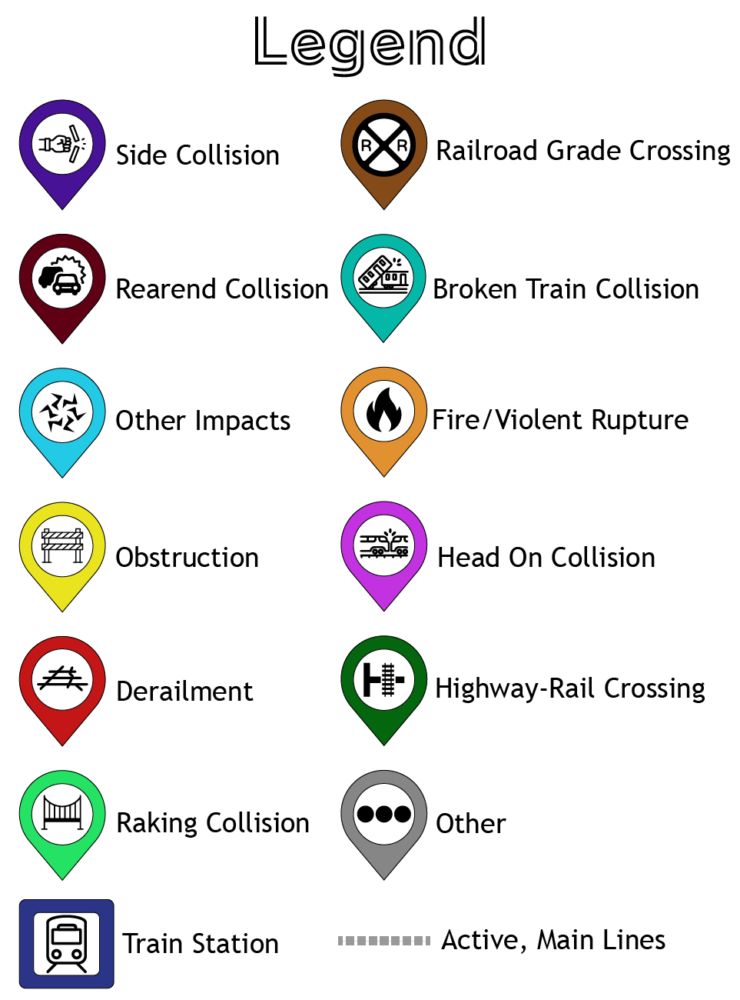

USA Train Accidents 2012 - 2022
×
USA Train Accidents 2012 - 2022
Welcome! This tool is for members of the general public who have an interest in learning about rail accidents in the United States over the last 10 years. If interested in a specific accident use the provided dropdown filters, or if interested in seeing trends over time toggle through the time slider in the upper left.
Railroad line data was obtained from xxxx.
This site was created by UW Madison students Domonic Cwalinski and Lisa Siewert in May 2023.
Visible Accidents: 0
